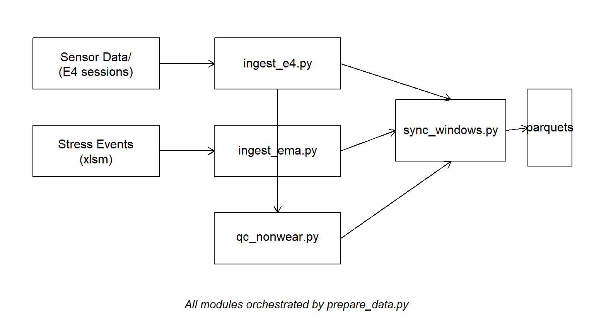
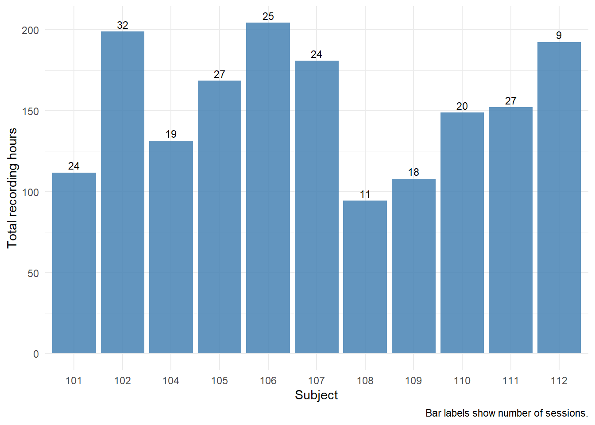
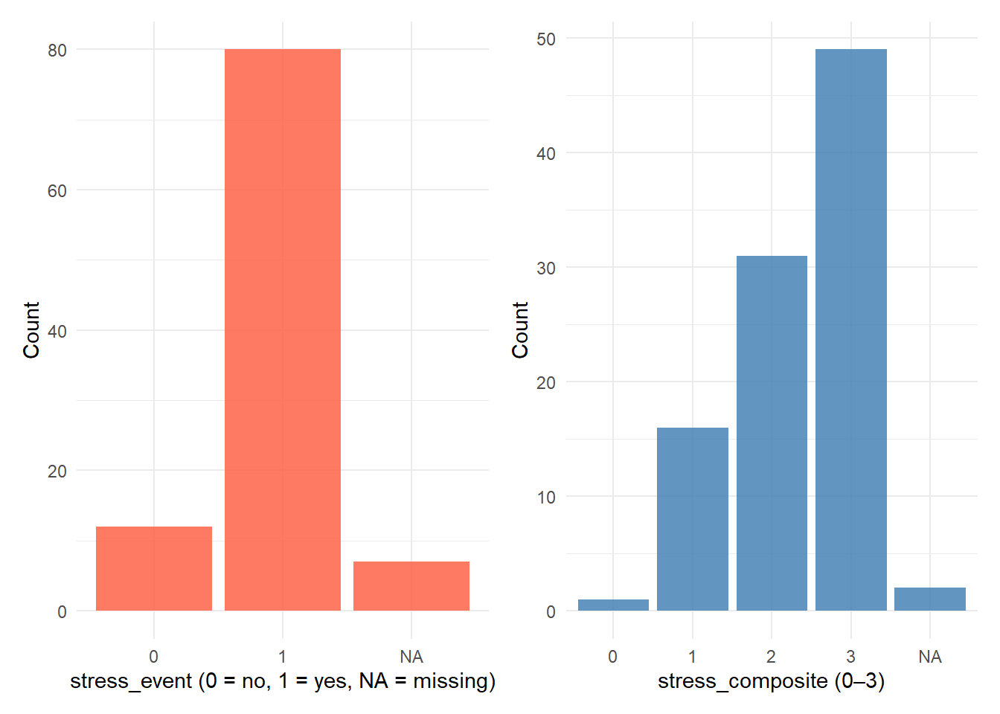
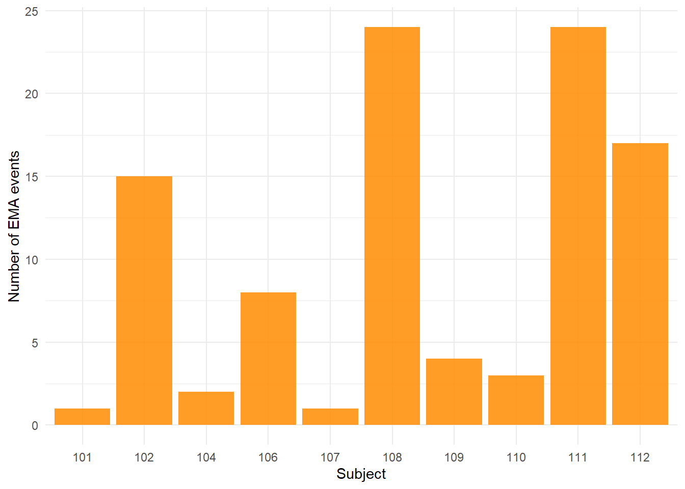
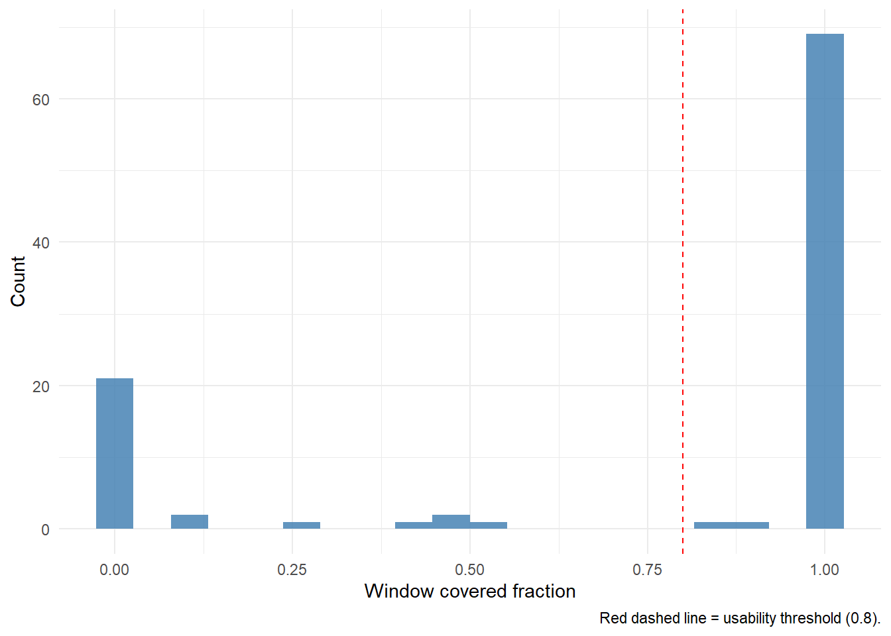
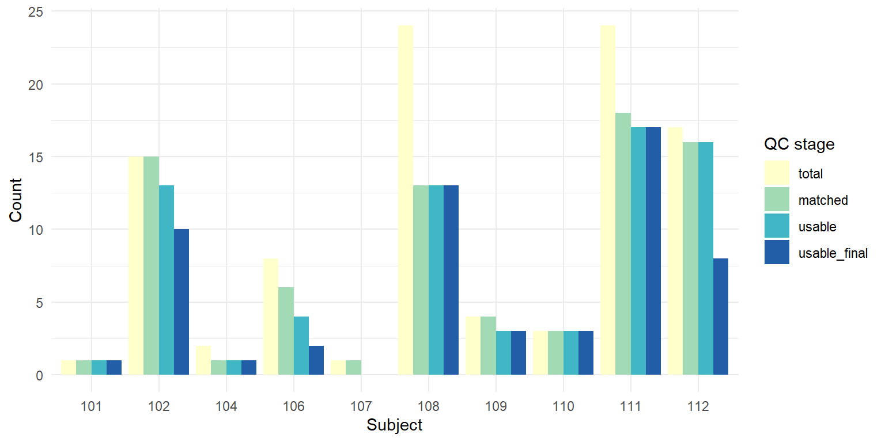
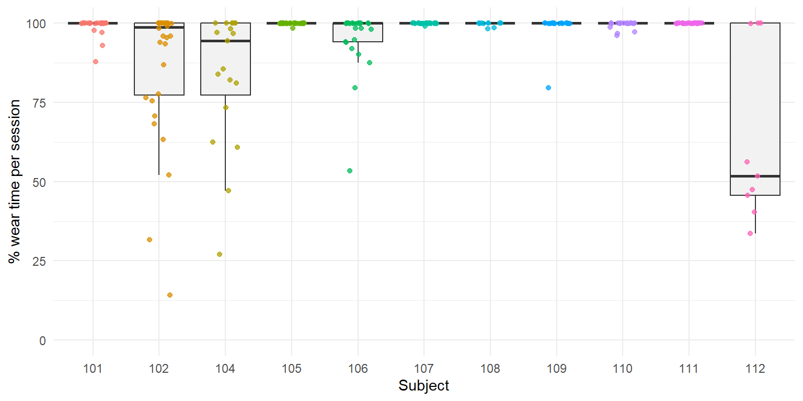

EMA + Wearable Physiology: a reproducible data pipeline for stress research
Python
R
EMA
Wearable Physiology
Empatica E4
Data Engineering
Signal Processing
Quality Control
Parquet
ADARP
mHealth
Addiction Research
End-to-end ingestion, synchronisation, and quality-control layer for combining smartphone-style ecological momentary assessment (EMA) with continuous wearable physiology (Empatica E4 wristband). Built on the public ADARP dataset (adults in outpatient AUD treatment, Sah et al. 2022, Zenodo 6640290). Covers Empatica-native CSV parsing, session inventory with device-ID normalisation, Excel codebook extraction, EDA-based non-wear detection (Kleckner et al. 2018), event-locked 30-min pre-event windowing, and a multi-stage usability funnel. Produces analysis-ready Parquet tables for downstream multilevel modelling and ML feature extraction. R/Python interop via Parquet, with Python handling signal-level work and R handling reporting.
1 1. Why this project
A common scenario in contemporary mental-health research is the integration of two streams of data with fundamentally different temporal structures:
- Ecological momentary assessment (EMA): brief self-reports collected several times per day through a smartphone or web survey. Discrete, event-locked, sparse, but high-validity for subjective experience.
- Continuous wearable physiology: biosignals from a wristband like the Empatica E4, sampled at 1–64 Hz for hours or days. Continuous, noisy, prone to missing-ness from device non-wear.
The scientific payoff comes from linking them: can an objective physiological signature observed in the minutes before a self-report prompt predict, or help interpret, what the person reports feeling?
This project builds the full data-engineering stack necessary for such analyses, on a real public dataset:
- ADARP (Sah et al., 2022), adults in outpatient treatment for alcohol use disorder, wearing an Empatica E4 continuously while completing EMA-style surveys over a two-week period.
Phase 15a (this notebook) covers the first half of the stack — ingestion, synchronisation, quality control, and documentation — ending with a clean, analysis-ready parquet table. Phases 15b–15c will add feature extraction, multilevel modelling, and predictive machine learning.
2 2. Dataset transparency
Before looking at any number, a note on what the public ADARP release actually contains. This matters because it shapes every modelling decision downstream, and because honest documentation of data limitations is itself part of what a research engineer delivers.
Present in the public dataset (Zenodo record 6640290, CC-BY 4.0):
- Raw Empatica E4 recordings: ACC, BVP, EDA, HR, IBI, TEMP, plus tags, in the native Empatica session-folder format. Roughly 4.5 GB across all subjects and sessions.
- “Final Phone Survey Stress Events” xlsm: a post-study structured phone survey with per-EMA stress indicators.
Described in the dataset documentation but not actually present:
- The 4-prompts-per-day × 14-days EMA web survey that was supposed to capture emotions, cravings, and stress. This component is either retained for confidentiality or was never published on Zenodo (checked in April 2026; the author has been contacted).
As a result, this project uses the Stress Events xlsm as its EMA-like outcome source, with three limitations documented in the DMP:
- n = 10 subjects, 99 stress events total (range 1–24 per subject)
- No craving outcome (we instead predict
stress_event, binary, andstress_composite=more_stressed + more_overwhelm + more_anxious, 0–3) - Prompt clock time is not recoverable from the xlsm (the
time submittedfield is a survey-completion duration, not an hour-of-day). We impute a canonical local hour perdataburstcode (morning → 09:00, midday → 12:00, afternoon → 15:00, evening → 20:00, America/Los_Angeles).
None of these is a showstopper: a scaled-down, well-characterised dataset is still a perfectly valid methodological demonstration — arguably a better one than a perfect textbook dataset, because it exposes the decisions a real engineer has to make.
3 3. Pipeline architecture
The pipeline is implemented in five Python modules plus an orchestrator script. This notebook is pure R: it reads the parquets produced by the Python layer and handles visualisation, narrative, and reporting. The Python code itself is shown in appendix (Section 9).
Why Parquet at every boundary? Columnar, typed, compressed, read natively by both Python (pyarrow) and R (arrow), with no CSV round-tripping. Also the de-facto standard in modern data engineering pipelines — worth showcasing.
Why no Python chunks in this notebook? Two reasons. First, running Python inside Quarto requires either a Jupyter kernel (an extra install) or reticulate (which ages poorly in production). Keeping the notebook R-only makes rendering bullet-proof on any RStudio install. Second, separating the compute (Python script, run once) from the report (R qmd, re-rendered often) follows the standard “reproducible research with expensive compute” pattern.
4 4. Sessions inventory
The E4 raw data is organised as Sensor Data/Part <id>C/<device>_<date-time>/. The ingestion module extracts, in a single pass:
- subject id (from the folder name)
- device id and session start (from the session folder name, with case normalisation — folder names sometimes flip the case of device IDs, e.g.
A01d53andA01D53refer to the same physical device) - session end and duration (from the number of samples in the most reliable signal, EDA at 4 Hz)
- file completeness (which of the 7 expected files are present)
sessions <- safe_read_parquet(file.path(DATA_DIR, "sessions_inventory.parquet"))
glimpse(sessions)Rows: 236
Columns: 8
$ subject_id <int> 101, 101, 101, 101, 101, 101, 101, 101, 101, 101, 10…
$ device_id <chr> "A01FB9", "A01FB9", "A01FB9", "A01FB9", "A01FB9", "A…
$ session_start_utc <dttm> 2019-04-26 18:48:19, 2019-04-28 00:43:57, 2019-04-2…
$ session_end_utc <dttm> 2019-04-27 02:00:50, 2019-04-28 03:52:30, 2019-04-2…
$ duration_hours <dbl> 7.21, 3.14, 0.01, 2.31, 0.65, 5.83, 1.90, 3.16, 7.35…
$ n_files_ok <int> 7, 7, 7, 7, 7, 7, 7, 7, 7, 7, 7, 7, 7, 7, 7, 7, 7, 7…
$ missing_files <chr> "", "", "", "", "", "", "", "", "", "", "", "", "", …
$ session_path <chr> "C:\\Users\\fmarting\\Documents\\Travail_Data\\66402…sessions_summary <- sessions %>%
group_by(subject_id) %>%
summarise(
n_sessions = n(),
total_hours = round(sum(duration_hours, na.rm = TRUE), 1),
n_devices = n_distinct(device_id),
.groups = "drop"
)
sessions_summary %>%
kbl(caption = "Per-subject session inventory.",
col.names = c("Subject", "# Sessions", "Total hours", "# Devices")) %>%
kable_styling(full_width = FALSE)| Subject | # Sessions | Total hours | # Devices |
|---|---|---|---|
| 101 | 24 | 111.8 | 2 |
| 102 | 32 | 198.9 | 2 |
| 104 | 19 | 131.5 | 2 |
| 105 | 27 | 168.6 | 2 |
| 106 | 25 | 204.3 | 3 |
| 107 | 24 | 180.9 | 2 |
| 108 | 11 | 94.5 | 2 |
| 109 | 18 | 108.0 | 2 |
| 110 | 20 | 148.8 | 2 |
| 111 | 27 | 152.2 | 2 |
| 112 | 9 | 192.5 | 2 |
Number of E4 sessions and cumulative recording hours per subject.
ggplot(sessions_summary, aes(x = factor(subject_id), y = total_hours)) +
geom_col(fill = "steelblue", alpha = 0.85) +
geom_text(aes(label = n_sessions), vjust = -0.4, size = 3) +
labs(x = "Subject", y = "Total recording hours",
caption = "Bar labels show number of sessions.")
What this shows. The ADARP corpus is remarkably dense: 236 E4 sessions totalling 1 692 cumulative hours across 11 subjects observed over roughly 14 calendar days each — an average of ~11 hours of wearable recording per subject per day, well above typical ambulatory-physiology compliance. After collapsing case-variant folder names (e.g. A01d53 vs A01D53 refer to the same physical device), every subject used exactly 2 distinct E4 units except subject 106, who used 3. This is consistent with battery-swap logistics or planned device replacement mid-study. One subject stands out in a different way: subject 112 produced only 9 sessions but 192 cumulative hours, with a median session duration of ~25 h — long continuous bouts rather than the shorter 4–8 h sessions typical of the rest of the cohort. This pattern changes the per-session QC profile, as seen in Section 7.
5 5. EMA outcomes
The Stress Events xlsm is parsed subject-by-subject (sections delimited by Caseid=XXX markers), with every non-empty data row turned into a tidy long record.
ema <- safe_read_parquet(file.path(DATA_DIR, "ema_clean.parquet"))
glimpse(ema)Rows: 99
Columns: 12
$ subject_id <int> 101, 102, 102, 102, 102, 102, 102, 102, 102, 102, 102…
$ obs_id <int> 12, 40, 41, 42, 50, 51, 52, 53, 56, 60, 61, 62, 63, 6…
$ databurst <int> 2, 1, 2, 3, 4, 1, 2, 3, 4, 1, 2, 3, 2, 3, 4, 2, 1, 1,…
$ timestamp_local <dttm> 2019-04-30 14:00:00, 2019-06-02 11:00:00, 2019-06-02…
$ more_stressed <dbl> 0, 1, 1, 1, 1, 1, 1, 1, 1, 1, 1, 1, 1, 1, 1, 1, 0, 0,…
$ more_overwhelm <dbl> 1, 0, 0, 0, 0, 0, 0, 0, 0, 0, 0, 0, 1, 0, 0, 0, 0, 1,…
$ more_anxious <dbl> 0, 1, 1, 1, 1, 1, 1, 1, 1, 1, 0, 1, 1, NA, 0, 0, 1, 1…
$ stress_event <dbl> 0, 1, 1, 1, 1, 1, 1, 1, 1, 1, 1, 1, 1, 1, 1, 1, 0, 0,…
$ stress_composite <dbl> 1, 2, 2, 2, 2, 2, 2, 2, 2, 2, 1, 2, 3, 1, 1, 1, 1, 2,…
$ reason_stress <int> 3, 1, 1, 1, 8, 1, 1, 1, 8, 8, 8, 1, 1, 2, 8, 1, 3, 8,…
$ reason_other <chr> "-3", "-1", "-3", "-1", "-1", "-1", "-3", "-1", "-1",…
$ timestamp_utc <dttm> 2019-04-30 19:00:00, 2019-06-02 16:00:00, 2019-06-02…p1 <- ema %>%
count(stress_event) %>%
ggplot(aes(x = factor(stress_event), y = n)) +
geom_col(fill = "tomato", alpha = 0.85) +
labs(x = "stress_event (0 = no, 1 = yes, NA = missing)", y = "Count")
p2 <- ema %>%
count(stress_composite) %>%
ggplot(aes(x = factor(stress_composite), y = n)) +
geom_col(fill = "steelblue", alpha = 0.85) +
labs(x = "stress_composite (0–3)", y = "Count")
wrap_plots(p1, p2, nrow = 1)
ema %>%
count(subject_id) %>%
ggplot(aes(x = factor(subject_id), y = n)) +
geom_col(fill = "darkorange", alpha = 0.85) +
labs(x = "Subject", y = "Number of EMA events")
What this shows. Out of 99 stress events, 80 are positive (stress_event == 1) and only 12 negative — a ~7:1 imbalance. This reflects the nature of the Stress Events xlsm: prompts are collected because the participant has reported feeling more stressed than usual, so the file has an over-representation of events. The secondary stress_composite score (0–3, summing the three binary affect indicators) is more informative: the modal score is 3 (49/99 EMAs — strong, overwhelming stress) with the remainder spread across scores 1 and 2. Only a single EMA is scored 0. EMA counts are highly unbalanced across subjects (range: 1–24), which is typical of ambulatory psychology data and the first-principles justification for multilevel modelling with random effects by subject — OLS or single-level logistic regression would massively over-weight the prolific subjects (108 and 111, each with 24 EMAs).
6 6. Synchronising EMA with physiological windows
For each EMA event we define a pre-event window of 30 minutes, ending at the imputed EMA timestamp. This window is then intersected with the E4 session active at that moment:
window_covered_fractionquantifies how much of the 30 min window falls inside an active session.- An EMA is marked
usable = TRUEifwindow_covered_fraction ≥ 0.8.
A sharper, window-level wear QC is then applied to produce usable_final: an EMA survives the funnel only if its window also has wear fraction ≥ 0.7.
windows <- safe_read_parquet(file.path(DATA_DIR, "ema_windows_qc.parquet"))
cov_summary <- windows %>%
summarise(
n_ema = n(),
n_matched = sum(session_idx >= 0),
n_usable_initial = sum(usable, na.rm = TRUE),
n_usable_final = sum(usable_final, na.rm = TRUE),
pct_final = round(100 * mean(usable_final, na.rm = TRUE), 1)
)
cov_summary %>%
kbl(caption = "EMA ↔ session matching and usability funnel.") %>%
kable_styling(full_width = FALSE)| n_ema | n_matched | n_usable_initial | n_usable_final | pct_final |
|---|---|---|---|---|
| 99 | 78 | 71 | 58 | 58.6 |
ggplot(windows, aes(x = window_covered_fraction)) +
geom_histogram(bins = 20, fill = "steelblue", alpha = 0.85) +
geom_vline(xintercept = 0.8, linetype = "dashed", colour = "red") +
labs(x = "Window covered fraction",
y = "Count",
caption = "Red dashed line = usability threshold (0.8).")
qc_long <- windows %>%
group_by(subject_id) %>%
summarise(
total = n(),
matched = sum(session_idx >= 0),
usable = sum(usable),
usable_final = sum(usable_final),
.groups = "drop"
) %>%
pivot_longer(-subject_id, names_to = "stage", values_to = "n") %>%
mutate(stage = factor(stage, levels = c("total", "matched", "usable", "usable_final")))
ggplot(qc_long, aes(x = factor(subject_id), y = n, fill = stage)) +
geom_col(position = "dodge") +
scale_fill_brewer(palette = "YlGnBu") +
labs(x = "Subject", y = "Count", fill = "QC stage")
What this shows. Of 99 total EMAs, 78 match an active E4 session (79 %), 71 pass the window-coverage threshold (72 %), and 58 pass the full QC chain (59 %) — this is the effective n for downstream modelling. The attrition is not uniform: subject 112 loses 9 out of 17 EMAs at the wear-fraction stage (median window wear ≈ 0.82, the only subject below 1.0), consistent with the severe wear-intermittence pattern confirmed in Section 7. Subjects 111 (17 usable out of 24), 108 (13/24), 102 (10/15) and 112 (8/17) together supply 48 of the 58 usable EMAs (83 %). Only two subjects (101 and 107) contribute a single EMA each — these carry negligible random-effect information and are candidates for a sensitivity analysis with / without them in phase 15c. Subject 107 in particular has zero usable_final EMAs: its single event fails the coverage threshold, and that subject effectively drops out of the downstream analysis at this point.
6.1 Why this matters
- Per-window QC, not just per-session QC. A session can be “mostly OK” (e.g. 80 % wear time averaged over 20+ hours) and yet the specific 30 min that matter for a given EMA could be the bit when the participant took the E4 off. We compute coverage and wear fraction at the window level.
- Usability chain:
session matched → window coverage ≥ 0.8 → wear fraction ≥ 0.7 → usable_final. Every EMA survives this funnel or doesn’t, and the surviving count is the actual n for downstream modelling.
7 7. Non-wear quality control
We flag non-wear using the standard EDA-based rule from Kleckner et al. (2018): a sample is non-wear if its EDA reading is below 0.05 µS and belongs to a contiguous run of such samples lasting at least 5 minutes.
nonwear <- safe_read_parquet(file.path(DATA_DIR, "nonwear_report.parquet"))
wear_by_subject <- summarise_wear_by_subject(nonwear)
wear_by_subject %>%
kbl(caption = "Wear-time summary per subject.",
col.names = c("Subject", "# Sessions", "Total h", "Wear h", "Median % wear")) %>%
kable_styling(full_width = FALSE)| Subject | # Sessions | Total h | Wear h | Median % wear |
|---|---|---|---|---|
| 101 | 24 | 111.8 | 110.5 | 100.0 |
| 102 | 32 | 198.9 | 174.4 | 98.8 |
| 104 | 19 | 131.5 | 115.4 | 94.5 |
| 105 | 27 | 168.6 | 168.4 | 100.0 |
| 106 | 25 | 204.3 | 187.5 | 100.0 |
| 107 | 24 | 180.8 | 180.7 | 100.0 |
| 108 | 11 | 94.5 | 94.2 | 100.0 |
| 109 | 18 | 108.0 | 107.3 | 100.0 |
| 110 | 20 | 148.8 | 146.8 | 100.0 |
| 111 | 27 | 152.2 | 152.2 | 100.0 |
| 112 | 9 | 192.5 | 88.3 | 51.7 |
ggplot(nonwear, aes(x = factor(subject_id), y = pct_wear)) +
geom_boxplot(outlier.shape = NA, fill = "grey95") +
geom_jitter(aes(colour = factor(subject_id)),
width = 0.2, size = 1.4, alpha = 0.75, show.legend = FALSE) +
labs(x = "Subject", y = "% wear time per session") +
coord_cartesian(ylim = c(0, 100))
What this shows. Wear compliance is excellent at the population level: median per-session wear = 100 %, mean = 94.8 %. Only 8 sessions out of 236 fall below 50 % wear. Looking at wear medians per subject, nine of the eleven subjects show a median at or near 100 %, with subject 104 slightly lower at 94.5 %. Subject 112 stands out sharply: median session wear of 51.7 %, and only 88.3 h of effective wear time out of 192.5 h recorded (54 %). Combined with the outlier session-duration pattern from Section 4, this paints a consistent picture: subject 112 wore the E4 in long nominal sessions but with frequent or extended periods off-body (e.g. charging, left on a desk). The pattern matters because session duration alone is a misleading adherence metric — a 30 h session at 40 % wear yields less productive signal than a 4 h session at 100 %. It also explains why per-window QC rejects most of subject 112’s EMAs despite the total recording time looking competitive. A last nuance: a session with low wear is not useless; if the actual wear windows happen to overlap an EMA timestamp, the EMA remains usable. This is why our funnel prioritises per-window statistics over per-session.
8 8. Outputs and handover to phase 15b
Phase 15a delivers five artefacts:
| File | Rows | Description |
|---|---|---|
| sessions_inventory.parquet | 236 | One row per E4 session (subject, device, start, end, duration, completeness). |
| ema_clean.parquet | 99 | Tidy EMA outcomes (stress_event, stress_composite, imputed timestamps). |
| windows_index.parquet | 99 | Each EMA paired with a 30-min pre-event physio window. |
| nonwear_report.parquet | 236 | Per-session wear statistics (EDA-based). |
| ema_windows_qc.parquet | 99 | Final per-window QC flag (combines session match, coverage, wear fraction). |
Ready-to-use for phase 15b: ema_windows_qc.parquet filtered on usable_final == TRUE is the canonical “table of EMA prompts for which physiological feature extraction is meaningful”. n = 58 usable EMAs across 9 subjects (subject 107 has zero usable EMAs and drops out from this point on). For each such row, phase 15b will open the corresponding E4 session, extract the 30 min pre-event window, and compute:
- HRV from BVP: time-domain (RMSSD, SDNN, pNN50), frequency-domain (LF, HF, LF/HF), non-linear (SD1/SD2 Poincaré) via
neurokit2. - EDA: tonic (SCL) and phasic (SCR frequency and amplitude) via
neurokit2.eda_phasic. - Actigraphy from ACC: magnitude mean and variance, activity counts.
Phase 15c then feeds those features into a multilevel logistic model (glmer/brms) with stress_event as outcome, and in parallel into a leave-one-subject-out cross-validated LightGBM model, with SHAP interpretability. With 58 observations clustered in 9 subjects and heavy class imbalance on the binary outcome, the primary analysis will use the stress_composite score as an ordinal outcome (clmm or brms cumulative family); the binary stress_event model will be reported as a secondary, under-powered sensitivity analysis.
Project architecture:
Francisco-MG.github.io/
├── projects/
│ └── projet25_ema_physio_adarp.qmd ← the main .qmd file
└── files/
└── projet_25/
├── .gitignore
├── DMP.md
├── README.md
├── python/
│ ├── requirements.txt
│ ├── ingest_e4.py
│ ├── ingest_ema.py
│ ├── qc_nonwear.py
│ ├── sync_windows.py
│ └── prepare_data.py
├── R/
│ └── render_helpers.R
└── data/
├── demo/ (to be filled in by --demo)
└── processed/ (to be completed by the full run)
9 10. Appendix — Python modules
The Python implementation files live in files/projet_25/python/ and are invoked via python prepare_data.py.
Full source code is at the project repository: files/projet_25/python/*.py.
10 11. References
- Sah, R. K., McDonell, M., Pendry, P., Parent, S., Ghasemzadeh, H., & Cleveland, M. J. (2022). Alcohol and Drug Abuse Research Program (ADARP) Dataset (1.0). Zenodo. https://doi.org/10.5281/zenodo.6640290
- Alinia, P., Sah, R. K., McDonell, M., Pendry, P., Parent, S., Ghasemzadeh, H., & Cleveland, M. J. (2021). Associations Between Physiological Signals Captured Using Wearable Sensors and Self-reported Outcomes Among Adults in Alcohol Use Disorder Recovery: Development and Usability Study. JMIR Formative Research, 5(7), e27891.
- Kleckner, I. R., Jones, R. M., Wilder-Smith, O., Wormwood, J. B., Akcakaya, M., Quigley, K. S., Lord, C., & Goodwin, M. S. (2018). Simple, transparent, and flexible automated quality assessment procedures for ambulatory electrodermal activity data. IEEE Transactions on Biomedical Engineering, 65(7), 1460–1467.
- Shiffman, S., Stone, A. A., & Hufford, M. R. (2008). Ecological momentary assessment. Annual Review of Clinical Psychology, 4(1), 1–32.